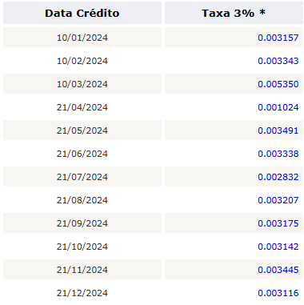

- Acessar o relatório razão do mês anterior da conta 1500505001―Depósitos Judiciais do Néctar e pegar o número do SEI dos novos processos que entraram.
- Entrar no SEI e procurar pelos processos. Baixar a Guia de Pagamento que contém o número do processo e o ID e imprimir.
- Acessar o site do Banco do Brasil no link https://www63.bb.com.br/portalbb/djo/id/comprovante/consultaDepositoJudicial,802,4647,4650,0,1,1.bbx. Fazer uma busca pelo ID que estava na Guia de Pagamento para encontrar o número da conta judicial
- Na guia de pagamento, escrever à lápis o número do SEI, a data em que o depósito aparece no Néctar, o número da conta judicial e o número da parcela
- Copiar a última tabela da planilha J:\Contabilidade\Provisões\Contingências\Contingência 2025.xlsx atualizando o mês e ano
- Deletar linhas da tabela em que o pagamento já foi pago e o processo encerrado
- Copiar os valores da coluna "Valores Atualizados" para a coluna "Saldo Anterior" copiando apenas os valores (sem fórmulas)
- Identificar os processos novos do mês anterior e ajustar as fórmulas que estarão diferentes das demais além de voltar da cor verde para a normal
- Inserir no final da tabela linhas com os novos processos cujos dados foram baixados nos primeiros itens. Obs: quando tem uma linha nova, a fórmula deve buscar a coluna "Valor do Capital Inicial" e não o "Saldo Anterior" como acontece com os depósitos que já existem. Pintar a célula que contém os valores novos de verde.
- Tirar um print da Tabela de índices do JAM para FGTS e colocar ao lado da planilha e usar a taxa de juros do último mês para atualizar as linhas que são "Caixa Conectivodade
- Atualizar o arquivo ordem.txt com a coluna que contém os números dos processos para que a planilha seja gerada na ordem correta
- Acessar o site do Banco do Brasil https://autoatendimento.bb.com.br/apf-apj-acesso/#/transacao/modulo-seguranca-ajuda/0 e colocar para rodar o robô com o número de todas as contas judicias e atualizar a data inicial e a data final
- Copiar os PDFs renomeados para a pasta J:\Contabilidade\Provisões\Contingências\Depósitos Judiciais\Extratos 2025\MMMMMM AAAA
- Rodar o programa ceasahelper da seguinte forma:>
- De base na planilha, atualizar a tabela Contingência 2025.xlsx
- A linha do processo de número 5010715-48.2019.4.03.6105 (RECEITA FEDERAL DO BRASIL (PIS/PASEP e COFINS) (CEASA)) deve ser atualizada usando a planilha J:\Contabilidade\Provisões\Contingências\Depósitos Judiciais\Extratos 2025\Atualização dep.judicial Pis Cofins - 2025.xlsx
- Importante! Depois que os arquivos PDF foram renomeados, verificar se tem algum terminado com '-resgate.pdf' e, se tiver, marcá-lo na planilha e fazer os acertos e lançamentos necessários
- Fazer o seguinte lançamento no lote de fechamento usando o valor da Atualização Mensal:
- Se houve resgate com retenção de IR é preciso fazer um lançamento NO DIA em que houve o resgate. Se preciso, abrir um lote novo só para isso. O lançamento dever ser da seguinte maneira:
- Ver se o valor total de depósitos judiciais bateu com o saldo da conta 1500505001―Depósitos Judiciais. Ver se precisa fazer algum lançamento.
- Atualizar as planilhas abaixo que estão no diretório J:\Contabilidade\Provisões\Contingências\Acordos\Andamento
- Posição Dep.Judicial.xlsx
- Planilha Semanal - Depositos Judiciais e Condenações_Acordos.xlsx
- Condenações e Acordos CEASA a partir de 2021.xlsx
- Para atualizar a planilha Planilha Semanal - Depositos Judiciais e Condenações_Acordos.xlsx nas linhas de Depósito/ Bloqueio Judicial, pegar o razão da conta 5102015431 - Indenizações Trabalhistas/Judiciais e analisar os lançamentos e fazer as atualizações dependendo de cada caso.

ceasahelper --action depositos_judiciais --directory C:\caminho\do\diretório\dos\pdfs
| Débito | 1500505001 | Depósitos Judiciais | Atualização Monetária ref. dep.Recursal |
| Crédito | 3108001020 | Variações Monetárias Ativas | Atualização Monetária ref. dep.Recursal |
| Débito | 1102015019 | IRPJ Recolhido Por Estimativa | IRRF REF. DEVOL. DEP. JUDICIAL PROC. 0010665-02.2021.5.15.0130 BALBINO BATISTA (Alternativa) |
| Crédito | 1500505001 | Depósitos Judiciais | IRRF REF. DEVOL. DEP. JUDICIAL PROC. 0010665-02.2021.5.15.0130 BALBINO BATISTA (Alternativa) |
OBS: utilize o CDC 01014100